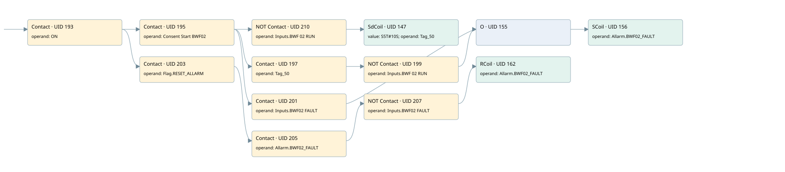

bwf02
allarms 1 · 검색 색인 순서 3 · 원본 내부 NID 추정 3
백업 PLF 원본의 3034203 바이트 위치에서 복원한 XML. 검색 문서 1783의 객체 키 161022005562000000000000와 연결했다. 이름 해석 13/13개. 남은 RefId는 상수 또는 미해석 참조다.
연결 구조 다시 그리기
원본 Part/PCon/Wire를 이용한 연결도다. TIA 화면의 래더 배치 또는 실행 결과를 재현한 그림은 아니다. 핀 연결은 아래 표와 원본 XML을 기준으로 읽는다. 노드 위에 마우스를 두면 피연산자 이름을 볼 수 있다.

접점·코일·블록과 피연산자
| Part UID | Gate | Negated 핀 | 연결 피연산자 |
|---|---|---|---|
| 193 | Contact | operand = ON | |
| 195 | Contact | operand = Consent Start BWF02 | |
| 210 | Contact | operand | operand = Inputs.BWF 02 RUN |
| 147 | SdCoil | value = S5T#10S; operand = Tag_50 | |
| 197 | Contact | operand = Tag_50 | |
| 199 | Contact | operand | operand = Inputs.BWF 02 RUN |
| 201 | Contact | operand = Inputs.BWF02 FAULT | |
| 155 | O | ||
| 156 | SCoil | operand = Allarm.BWF02_FAULT | |
| 203 | Contact | operand = Flag.RESET_ALLARM | |
| 205 | Contact | operand = Allarm.BWF02_FAULT | |
| 207 | Contact | operand | operand = Inputs.BWF02 FAULT |
| 162 | RCoil | operand = Allarm.BWF02_FAULT |
접점 경로를 펼친 조건식
Contact·O/A·비교기의 원본 연결을 읽기 쉽게 펼친 보조 해석이다. POWER는 전원 레일 시작을 뜻한다. 호출 블록·에지·타이머의 내부 동작과 다중 쓰기 순서는 이 표로 실행 검증하지 않았다. 미해석 핀과 RefId는 원문 연결표에서 확인한다.
| UID | 동작 | 대상 | 원본 접점 경로 | 내용 |
|---|---|---|---|---|
| 147 | SdCoil | Tag_50 | ((ON AND Consent Start BWF02) AND NOT [Inputs.BWF 02 RUN]) | 시간 동작 SdCoil; 타이머 의미 추가 확인 / 시간 인자 S5T#10S |
| 156 | SCoil | Allarm.BWF02_FAULT | ((((ON AND Consent Start BWF02) AND Tag_50) AND NOT [Inputs.BWF 02 RUN]) OR ((ON AND Consent Start BWF02) AND Inputs.BWF02 FAULT)) | 조건 성립 시 Set |
| 162 | RCoil | Allarm.BWF02_FAULT | (((ON AND Flag.RESET_ALLARM) AND Allarm.BWF02_FAULT) AND NOT [Inputs.BWF02 FAULT]) | 조건 성립 시 Reset |
원본 배선 연결
| Wire UID | 동일 Wire 연결 끝점 |
|---|---|
| 209 | Powerrail {} ↔ Part 193.in |
| 175 | ORef 163 (ON) ↔ Part 193.operand |
| 194 | Part 193.out ↔ Part 195.in ↔ Part 203.in |
| 176 | ORef 164 (Consent Start BWF02) ↔ Part 195.operand |
| 196 | Part 195.out ↔ Part 210.in ↔ Part 197.in ↔ Part 201.in |
| 213 | ORef 211 (Inputs.BWF 02 RUN) ↔ Part 210.operand |
| 21 | Part 210.out ↔ Part 147.in |
| 177 | ORef 165 (S5T#10S) ↔ Part 147.value |
| 178 | ORef 166 (Tag_50) ↔ Part 147.operand |
| 179 | ORef 167 (Tag_50) ↔ Part 197.operand |
| 198 | Part 197.out ↔ Part 199.in |
| 180 | ORef 168 (Inputs.BWF 02 RUN) ↔ Part 199.operand |
| 200 | Part 199.out ↔ Part 155.in1 |
| 182 | ORef 169 (Inputs.BWF02 FAULT) ↔ Part 201.operand |
| 202 | Part 201.out ↔ Part 155.in2 |
| 183 | Part 155.out ↔ Part 156.in |
| 185 | ORef 170 (Allarm.BWF02_FAULT) ↔ Part 156.operand |
| 187 | ORef 171 (Flag.RESET_ALLARM) ↔ Part 203.operand |
| 204 | Part 203.out ↔ Part 205.in |
| 188 | ORef 172 (Allarm.BWF02_FAULT) ↔ Part 205.operand |
| 206 | Part 205.out ↔ Part 207.in |
| 189 | ORef 173 (Inputs.BWF02 FAULT) ↔ Part 207.operand |
| 208 | Part 207.out ↔ Part 162.in |
| 191 | ORef 174 (Allarm.BWF02_FAULT) ↔ Part 162.operand |
식별자 해석 근거 13개
| ORef UID | RefId | 이름 | IdentXmlPart 파일 | 해석 방법 |
|---|---|---|---|---|
| 163 | 1 | ON | 0658-IdentXmlPart.xml | UID/RID + search-text + NID agreement |
| 164 | 18 | Consent Start BWF02 | 0658-IdentXmlPart.xml | UID/RID + search-text + NID agreement |
| 211 | 260 | Inputs.BWF 02 RUN | 0657-IdentXmlPart.xml | UID/RID + search-text + NID agreement |
| 166 | 19 | Tag_50 | 0658-IdentXmlPart.xml | UID/RID + search-text + NID agreement |
| 165 | 6 | S5T#10S | 0656-IdentXmlPart.xml | literal candidate: UID/RID/NID + nearby named declarations + search-text agreement |
| 167 | 19 | Tag_50 | 0658-IdentXmlPart.xml | UID/RID + search-text + NID agreement |
| 168 | 260 | Inputs.BWF 02 RUN | 0657-IdentXmlPart.xml | UID/RID + search-text + NID agreement |
| 169 | 261 | Inputs.BWF02 FAULT | 0657-IdentXmlPart.xml | UID/RID + search-text + NID agreement |
| 170 | 22 | Allarm.BWF02_FAULT | 0657-IdentXmlPart.xml | UID/RID + search-text + NID agreement |
| 171 | 13 | Flag.RESET_ALLARM | 0657-IdentXmlPart.xml | UID/RID + search-text + NID agreement |
| 172 | 22 | Allarm.BWF02_FAULT | 0657-IdentXmlPart.xml | UID/RID + search-text + NID agreement |
| 173 | 261 | Inputs.BWF02 FAULT | 0657-IdentXmlPart.xml | UID/RID + search-text + NID agreement |
| 174 | 22 | Allarm.BWF02_FAULT | 0657-IdentXmlPart.xml | UID/RID + search-text + NID agreement |
검색 코드 보조 자료
참조 명칭을 찾기 위한 자료이며 실행 순서나 AND/OR 관계는 위 연결표로 확인한다.
"on" "consent start bwf02" "inputs"."bwf 02 run" "tag_50" s5t#10s "flag".reset_allarm "allarm".bwf02_fault "inputs"."bwf02 fault" "allarm".bwf02_fault "tag_50" "inputs"."bwf 02 run" "allarm".bwf02_fault "inputs"."bwf02 fault"